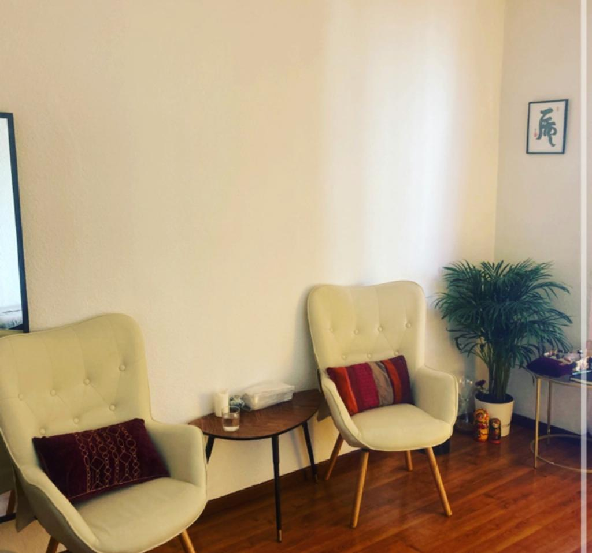
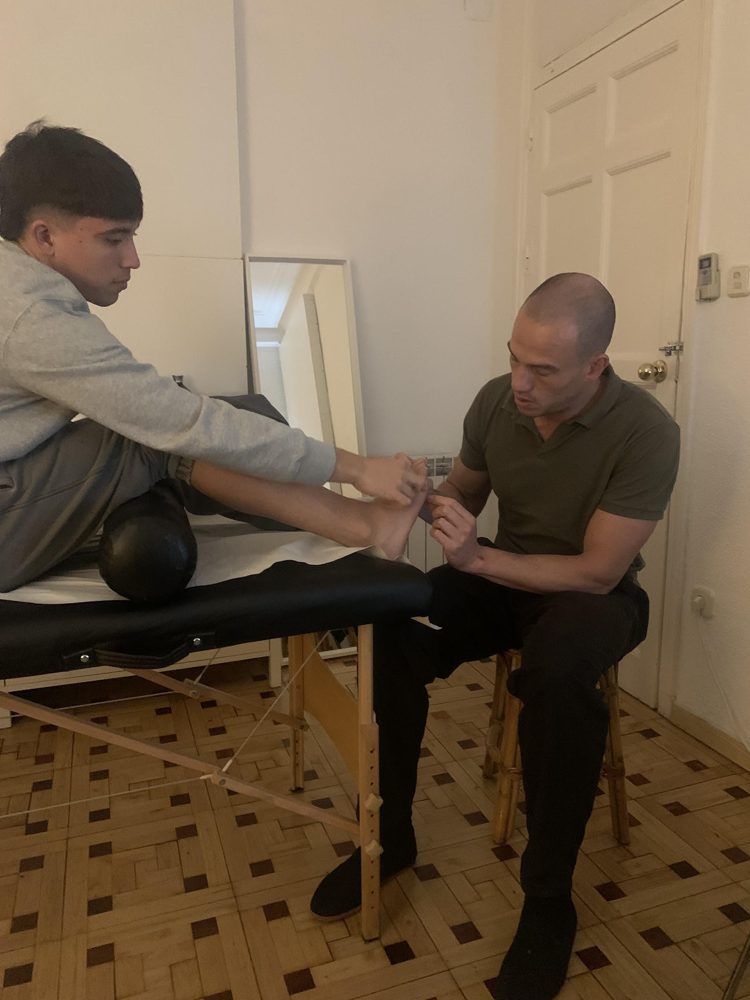

Acupuntura, fitoterapia china y consejo de alimentación en la calle Fuencarral. Roberto te orienta sin prisas, según tu caso, tu ritmo y tu forma de ser, y hace un seguimiento cercano de cómo evolucionas.
★★★★★5,0 · 58 reseñas en Google
Cada tratamiento se adapta a tus necesidades y se va ajustando poco a poco. Roberto responde siempre y se preocupa por cómo te encuentras.
Sesiones personalizadas.
Fórmulas de plantas.
Cercano y constante.
58 reseñas.
Todo organizado por grupos, para que encuentres lo que buscas en segundos.
Te esperamos en la calle de Fuencarral, 82, en el centro de Madrid.

5,0 de 5 estrellas · 58 reseñas
"Desde el principio me orientó sin prisas y enfocado en mi caso particular, mi ritmo y mi forma de ser. Recomiendo a Roberto al 100 %: es pausado, tranquilo y seguro, te hace seguimiento y se preocupa por tu objetivo."
Emmanuel L."Me gusta especialmente que el tratamiento esté adaptado a mis necesidades y que haga un seguimiento cercano de la evolución. Es una persona muy amable, cercana, atenta y profesional, que transmite mucha confianza."
Aylin R."Buen profesional. El seguimiento es cercano, responde siempre y se preocupa por cómo evolucionas. Lo recomiendo por su trato humano."
L. G.Escríbenos por WhatsApp y te damos cita.
Calle de Fuencarral, 82
28004 Madrid